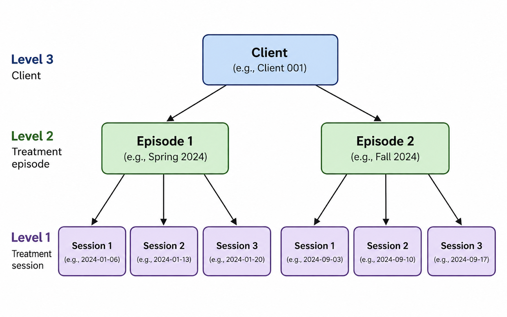

Overview
leap is designed for longitudinal treatment data in
which individuals contribute repeated observations over time. In
psychotherapy and other behavioral health settings, these observations
typically correspond to treatment sessions. This article describes the
hierarchical structure of longitudinal psychotherapy data and introduces
the example datasets included with leap.
Longitudinal data
When treatment occurs across multiple periods of care,
leap can be used to identify distinct treatment episodes.
This adds an additional level to the data structure: sessions
occur within treatment episodes, and treatment episodes occur within
clients.

The starting point for leap is session-level
longitudinal data, where each row represents a treatment session for a
client. At minimum, the data should contain information identifying the
client, session, session date, and outcome of interest.
Importantly, longitudinal treatment records do not need to be
balanced. Clients may contribute different numbers of sessions and
treatment episodes, and the spacing between sessions may vary over time.
These features are common in naturalistic treatment records and are
accommodated by leap.
When episode variables are added, each session is linked to both the
treatment episode in which it occurred and the client who received
treatment. This structure allows leap to distinguish change
occurring within a treatment episode from patterns that occur across
repeated episodes of care.
The resulting data can therefore be viewed as having three levels:
Session: an individual treatment visit or observation
Episode: a distinct period of treatment containing one or more sessions
Client: an individual who may contribute one or more treatment episodes
This structure becomes particularly important when fitting statistical models because sessions from the same episode and episodes from the same client are related rather than independent observations.
Package data
leap includes simulated longitudinal psychotherapy data
for demonstrating package functions and illustrating common features of
real-world treatment records. The simulated data vary along two
dimensions: design and scenario
type.
Design: balanced and unbalanced
The simulated data include both balanced and unbalanced longitudinal designs.
In the balanced design, clients contribute the same number of treatment episodes and the same number of sessions within each episode. This provides a simplified data structure that is useful for demonstrating and evaluating statistical methods.
In the unbalanced design, clients may contribute different numbers of sessions and episodes of care. This structure more closely resembles naturalistic treatment records, where treatment duration and patterns of reengagement vary across clients.
Scenario type: stochastic and clinical
Within each design, leap provides simulations
representing different sources and patterns of variation.
Stochastic scenarios vary the amount of between-client and between-episode variability in treatment trajectories. These scenarios are useful for examining how different variance structures affect episode-based analyses.
Clinical scenarios represent systematic patterns of treatment and reengagement across episodes, such as recurrence, efficient return to treatment, persistent difficulty, and diminishing response.
Together, these simulated data provide controlled examples for
demonstrating how leap functions behave across different
longitudinal data structures and patterns of change.
Summary
Readers interested in learning more about longitudinal data analysis of psychotherapy can find guides in the Research Foundations article.